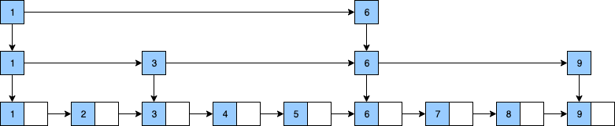

跳跃表(skiplist)是一种有序数据结构，它通过在每个节点中维持多个指向其他节点的指针，从而达到快速访问节点的目的。-《Redis设计与实现》
一、从链表说起
如上图所示，为一个有序单链表，当要查询某个节点数据时，只能从头到尾遍历获取，查询效率不高。
为了解决单链表的查询效率问题，我们考虑通过在单链表的基础上增加索引的方式来提高查询效率。

如上图所示，在单链表之上创建索引后，当要查询某个节点时，就可以通过从上而下，从左到右的索引去搜索，有些类似于二分查找。
例如查询节点9的信息时，查询路径为：
上图我们的单链表索引只有2层，当数据量巨大时，增加多层索引，就可以极大提升效率，而这种在单链表增加多层索引的链表结构就是跳跃表。
二、Redis的跳跃表
在大部分情况下，跳跃表的效率可以和平衡树相媲美，且跳跃表的实现比平衡树更为简单。
Redis使用跳跃表作为有序集合键的底层实现之一，如果一个有序集合包含的元素数量比较多，又或者有序集合中元素的成员是比较长的字符串时，Redis就会使用跳跃表来作为有序集合键的底层实现。
Redis的跳跃表由zskiplistNode和zskiplist两个结构定义，其中zskiplistNode结构用于表示跳跃表节点，zskiplist结构用于保存跳跃表节点的相关信息。
如上图，最左侧为zskiplist结构，包含以下属性：
1、header：指向跳跃表头节点
2、tail：指向跳跃表尾节点
3、level：记录节点做大层高（不包含头节点）
4、length：存储跳跃表节点数（不包含头节点）
在zskiplist结构右边的4个节点则为zskiplistNode结构，包含以下属性
1、层level：图示的L1，L2等标记各个层，层上带前进指针和跨度，前进指针用于访问其他节点，跨度标记距离其他节点的距离。
2、后退指针BW：指向当前节点的前一个相邻接点，用于倒序遍历使用
3、分值score：图示的1.0，2.0等数值即节点保存的分值，在跳跃表中，节点按各自所保存的分值从小到大排序
4、成员对象obj：图示的o1，o2等表示节点所保存的成员对象
需要注意的是，表头节点和其他节点的构造是完全一样的，但是表头节点的后退指针，分值和成员对象不会使用。
三、总结
在Redis中，跳跃表相关的重点有：
1、跳跃表是有序集合的底层实现之一
2、Redis的跳跃表实现由zskiplist和zskiplistNode两个结构组成，其中zskiplist用于保存跳跃表信息（表头节点，表尾节点，长度），而zskiplistNode则用于表示跳跃表节点
3、每个跳跃表都是1-32之间的随机数
4、在同一个跳跃表中，多个节点可以包含同一个分值，但是每个节点的obj是唯一的
5、跳跃表中的节点按照分值大小进行排序，分值相同时，按obj大小排序
最后，附上用PHP代码实现的单链表和跳跃表的代码：
单链表PHP代码实现：gitee地址
跳跃表PHP代码实现：gitee地址